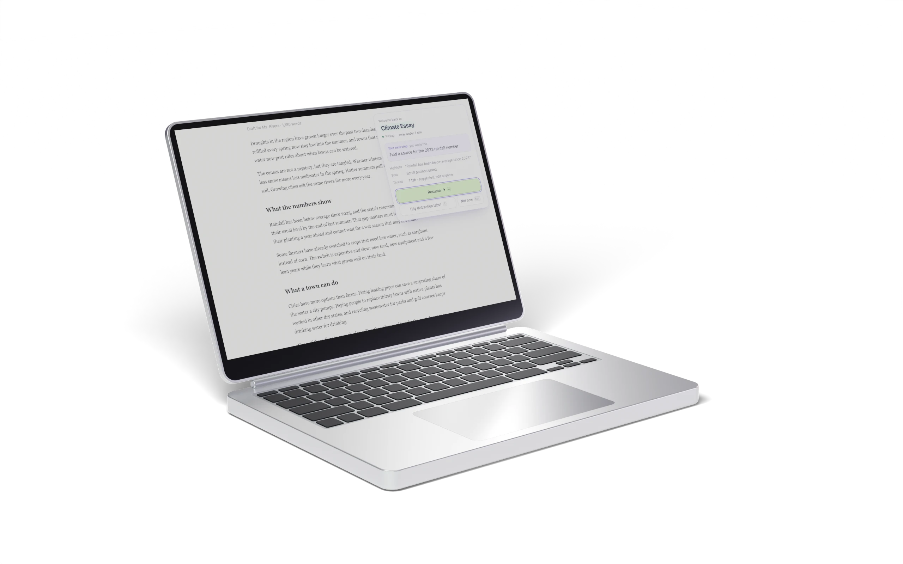
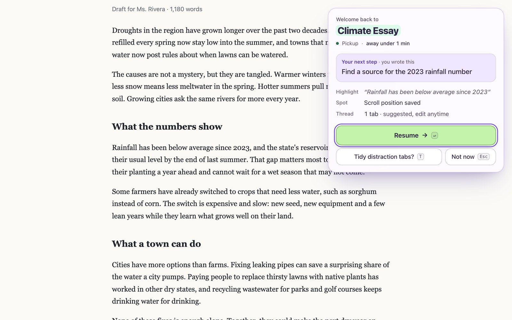
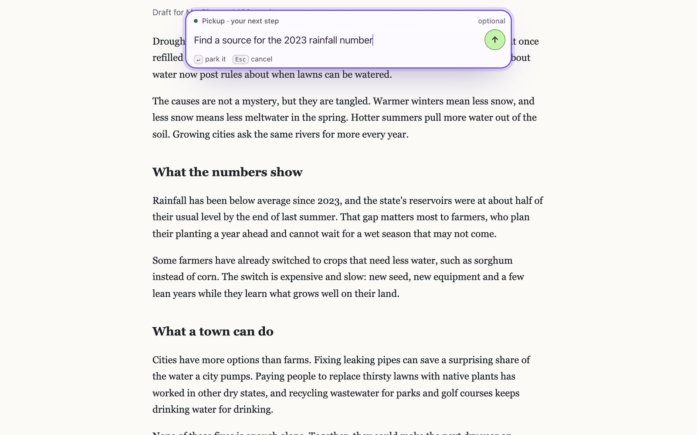

Park before you go
Leave yourself one line. Or don't: Pickup saves your place either way, and Esc skips the prompt.
A Chrome extension that remembers where you left off, so coming back feels easy.


Pickup's return card over the essay: welcome back to Climate Essay, time away, the next step the student wrote, the highlighted sentence, and Resume, Tidy and Not now.
A message, a video, a friend at the door. You were halfway through a sentence. Pickup keeps your place in Chrome so the way back is one key, not five minutes of finding where you were.
Simulation · not connected to your browser
The drought nobody planned for
Reservoirs that once refilled every spring now stay low into summer.
Rainfall has been below average since 2023, and the gap matters most to farmers who
Step 1
An essay draft, three research tabs in a named tab group. You know exactly what comes next.

Step 2
A message, a video, a quick look at something else. Pickup notices you left a work page. It never blocks the site.
Step 3
Press Alt+P first and leave yourself one line: your next step, in your own words. Or skip it; your place is saved either way.

Step 4
Come back and a small card shows the task, how long you were away, the next step you wrote and the sentence you were on.
Step 5
Press Enter. You land on the same tab at the same spot. Press T and break tabs fold into a "Later" group. Nothing is closed.
This is the card Pickup shows when you come back to a work page. Press its buttons, or focus it and use Enter, T and Esc. A demo on this page; it doesn't touch your browser.
Droughts in the region have grown longer over the past two decades, and towns that once refilled every spring now stay low into the summer.
Rainfall has been below average since 2023, and the state's reservoirs were at about half of their usual level by the end of last summer.
Some farmers have already switched to crops that need less water, such as sorghum instead of corn.
Your next step · you wrote this
Return card open.
What Pickup does today. Each demo below runs on this page only.
Leave yourself one line. Or don't: Pickup saves your place either way, and Esc skips the prompt.
From any tab in Chrome. On the return card, Enter does the same and restores your scroll.
You're in the group chat.
Tabs you opened on a break fold into a collapsed "Later" group. You decide what to close.
Two tabs here are from your break.

Each task is a named Chrome tab group, so you can see which tabs belong to which job.
One quiet notification per break, and only if you wrote a next step. It never blocks a site.
Type it when you park, right-click a sentence and choose "Make this my next step", or, with voice turned on, say it in the panel.
Save your place at night and get one "Start here" reminder with your next step the next morning.
Ask "where was I?", set a break timer ("back in 10"), see your tasks and today's facts.
On resume, a video jumps back 10 seconds and waits, paused.
Pickup keeps your place on your computer and nowhere else. Open any line for the details.
chrome.storage.local, on this computerNo Pickup server. No requests out.
Tasks, next steps and break times are kept in chrome.storage.local in your browser profile. The extension makes no network requests at all; our test suite fails the build if any file tries to.
There is no Pickup server. For our pilot, Pickup keeps a small event log (for example "came back after 7 min") in the same local storage. It only leaves your computer if you export it as a CSV yourself.
Pickup stores the page's address, your scroll position and up to 200 characters you highlighted, so it can bring you back to them. It never stores the page's text. In Google Docs it can't read the text, so it saves your place without a highlight.
The optional voice panel only runs speech recognition in Chrome's on-device mode, and only after you turn it on. Spoken replies use voices installed on your computer.
The dashboard has a Delete all button. It clears everything Pickup stored. It is the only thing in Pickup coloured red.
Chrome 123 or newer, on a laptop or desktop. Pickup loads unpacked from a zip; it isn't on the Chrome Web Store. Free, no account.
The zip will be on our GitHub release page once the repo is public. It isn't there yet.
| Keys | What it does | Without the keyboard |
|---|---|---|
| Park before you go | or the Park button in the toolbar popup | |
| Back to your task from any tab | or Resume in the popup | |
| Open the Pickup panel | or the panel button in the popup | |
| Resume, on the return card | or click Resume |
Try it without your own data: open the dashboard and click Load sample data.
A small pilot, run honestly. Three people who built the tool, about one day, randomised per comeback. A starting point, not proof.
Results
The pooled pilot numbers (medians with IQR, n per condition, by time away) go here once the team posts them. Nothing is shown until they are real.
Pickup keeps your place, so an interruption costs you a key press, not your train of thought.